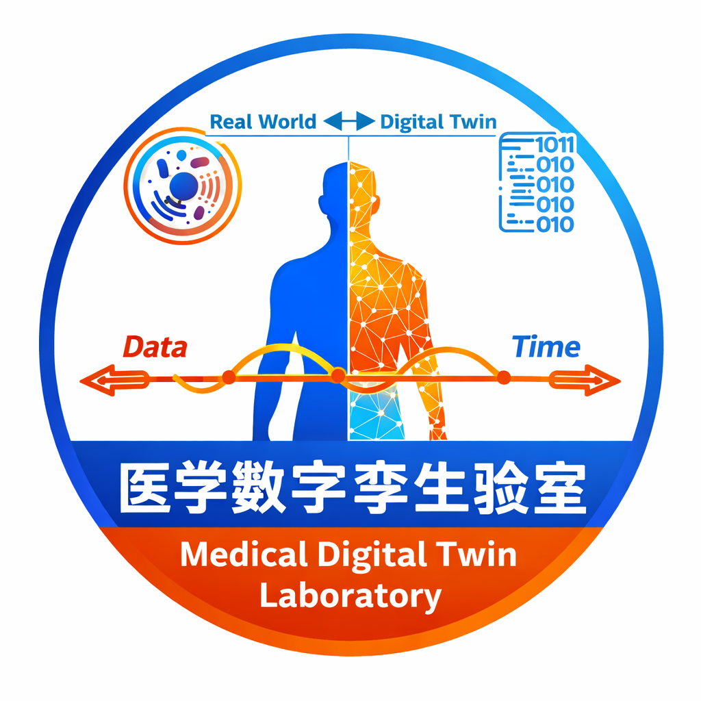

Toggle navigation
Toggle navigation

Home
News
Publications
Selected
All
Service
Resources
CV
Contact
Updates and News
Editor'26
Jan, 2026: Invited to be a guest accosiate editor in IEEE TBME
Book'26
Jan, 2026: one book is published by Springer Nature
J Physiol'25
Dec, 2025: one paper is accepted by J Physiol
Guangzhou'25
Dec, 2025: one proposal (Guangzhou Science and Technology Project, No. 2025B03J0127) is approved
IEEE-TMI'25
Nov, 2025: one paper is accepted by IEEE-TMI
ESWA'25
Oct, 2025: one paper is accepted by ESWA
New Journey
Oct, 2025: joined the First Affiliated Hospital of Jinan University
PLOS Comput Biol'25
Aug, 2025: one paper is accepted by PLOS Computational Biology (Front Cover)
MOST'25
Jul, 2025: one proposal (No. H20240205) is approved by MOST
Editor'25
May, 2025: Invited to be a guest accosiate editor in IEEE JBHI
ISBI'25
Apr, 2025: one paper is accepted by ISBI
IEEE-JBHI'25
Feb, 2025: one paper is accepted by IEEE-JBHI
MIA'25
Jan, 2025: one paper is accepted by MIA
Guangzhou'24
Dec, 2024: one proposal (Guangzhou Science and Technology Project, No. 2024B03J1283) is approved
BIBM'24
Dec, 2024: one paper is accepted by BIBM
ESWA'24
Dec, 2024: one paper is accepted by ESWA
NSF of Guangdong'24
Dec, 2024: one proposal (No. 2024A1515011886) is approved by NSF of Guangdong
BSPC'24
Oct, 2024: one paper is accepted by BSPC
EAAI'24
Oct, 2024: one paper is accepted by EAAI
Book'24
Sep, 2024: one book is published by Springer Nature
HRS'24
Sep, 2024: one paper is accepted by HRS
MICCAI'24
Sep, 2024: one paper is accepted by MICCAI
Sci Data'24
May, 2024: two papers are accepted by Scientific Data
MBEC'24
Mar, 2024: one paper is accepted by MBEC
IEEE-JBHI'24
Feb, 2024: one paper is accepted by IEEE-JBHI
Book'24
Dec, 2023: one book is published by Frontier SA
NSF of Guangdong'23
Dec, 2023: one proposal (No. 2023A1515012833) is approved by NSF of Guangdong
IJCARS'23
Nov, 2023: one paper is accepted by IJCARS
CVIA'23
Oct, 2023: one paper is accepted by CVIA
ESWA'23
Oct, 2023: one paper is accepted by ESWA
PLOS Comput Biol'23
Sep, 2023: one paper is accepted by PLOS Computational Biology
HRS'23
Sep, 2023: two papers are accepted by HRS
Visiting Journey
Jul, 2023: started visiting the Auckland Bioengineering Institute as a Visiting Fellow
Interface Focus'23
Jun, 2023: two papers are accepted by Interface Focus
MBEC'23
Mar, 2023: one paper is accepted by MBEC
Guangzhou'22
Dec, 2022: one proposal (Guangzhou Science and Technology Project, No. 202201010544) is approved
Arch Gynecol Obstet'22
Aug, 2022: one paper is accepted by Archives of Gynecology and Obstetrics
CinC'22
Jul, 2022: one paper is accepted by CinC
ESWA'21
Dec, 2021: one paper is accepted by ESWA
New Journey
Oct, 2021: joined Guangzhou Lianyin Medical Technology Co., Ltd.
Comput Biol Med'21
Mar, 2021: one paper is accepted by Computers in Biology and Medicine
Philos Trans R Soc A'20
Oct, 2020: one paper is accepted by Philosophical Transactions of the Royal Society A
EMBC'20
Jul, 2020: one paper is accepted by EMBC
Sci Rep'20
May, 2020: one paper is accepted by Scientific Reports
PLOS Comput Biol'20
Feb, 2020: one paper is accepted by PLOS Computational Biology
MOST'19
Dec, 2019: two proposals (No. 2019YFC0120107 and No. 2019YFC0120100) are approved by MOST
Sci Rep'19
Oct, 2019: one paper is accepted by Scientific Reports
NSF'19
Sep, 2019: one proposal (No. 61901192) is approved by NSFC
CinC'19
Jul, 2019: four papers are accepted by CinC
New Journey
Mar, 2019: joined Jinan University